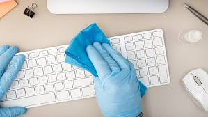
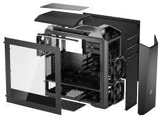
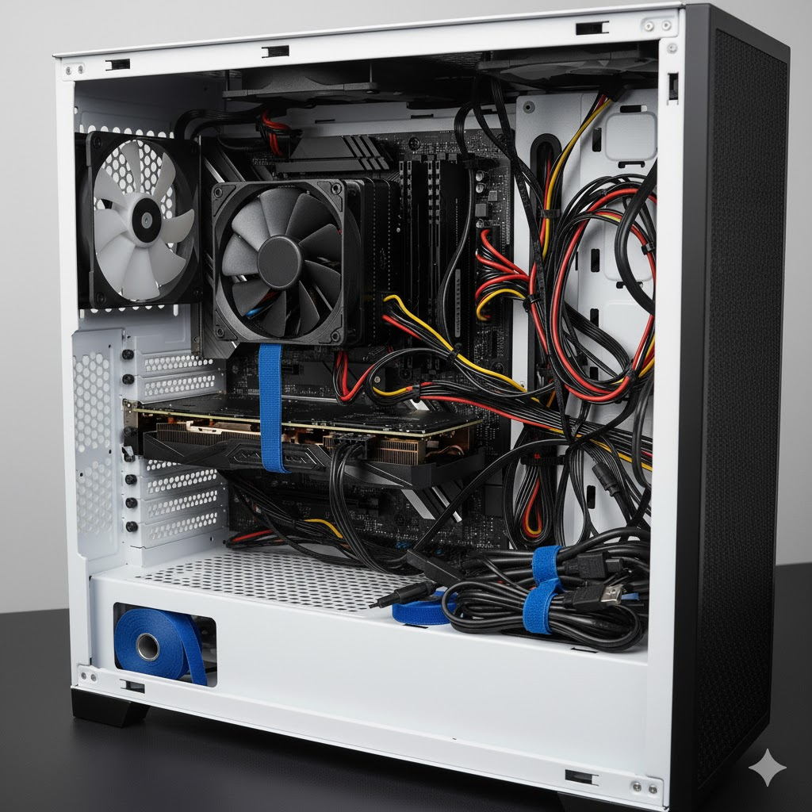
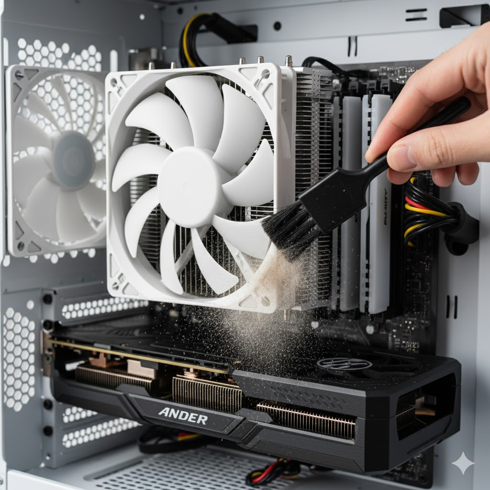
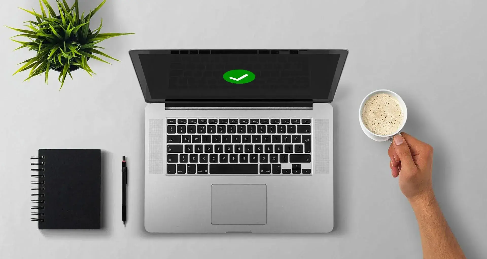
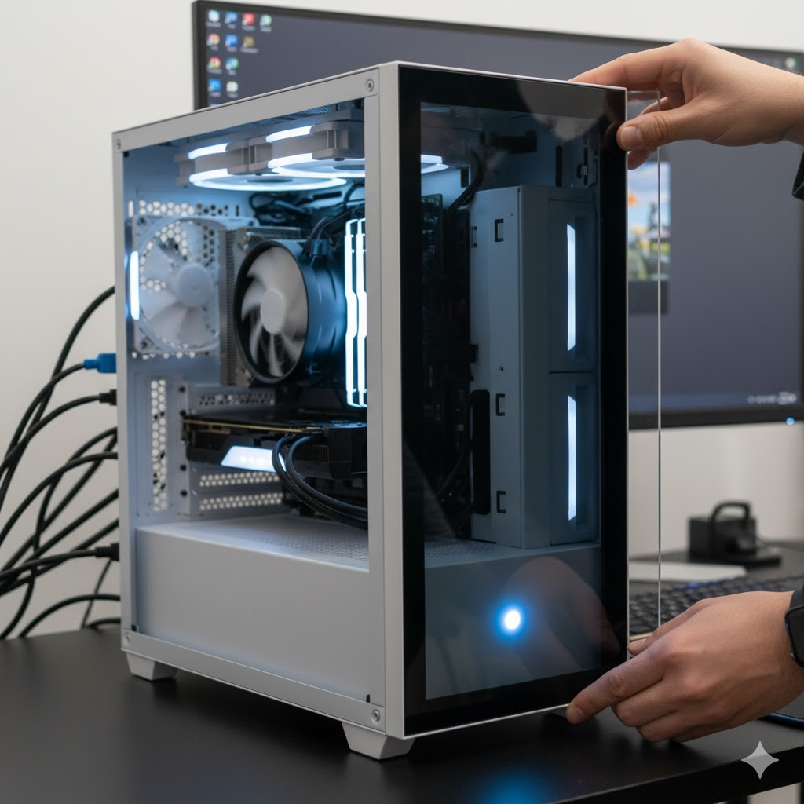
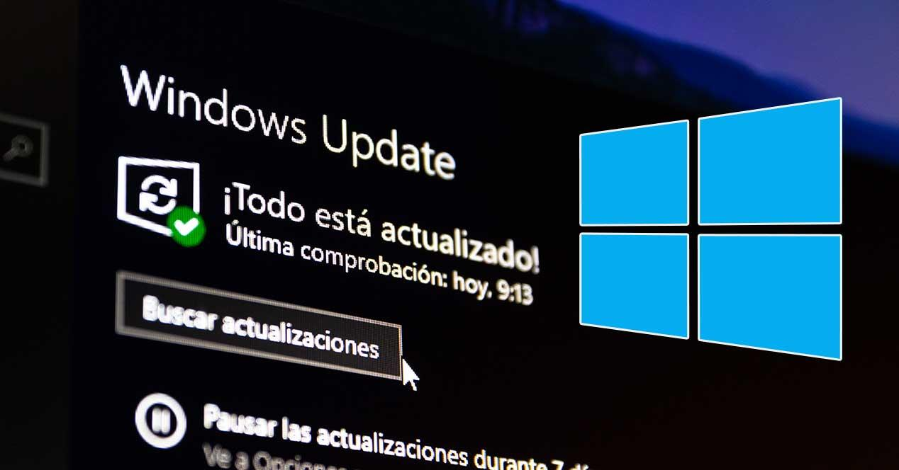
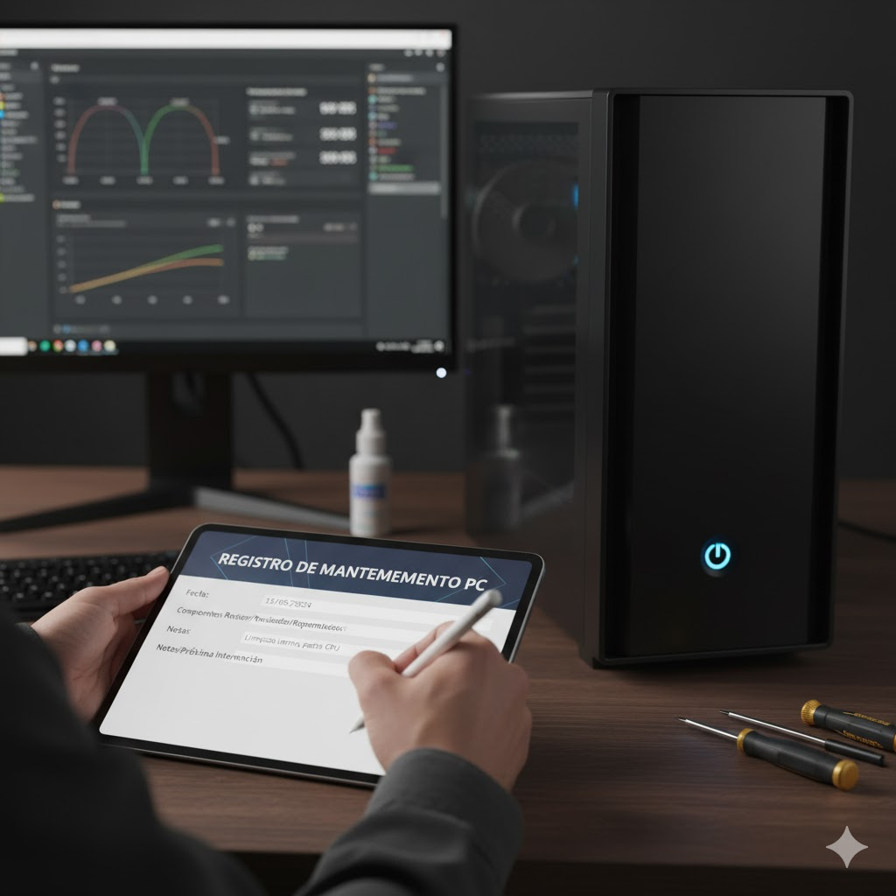

Pasos para el mantenimiento preventivo
1
Preparación: Apaga el equipo, desconecta todos los cables y prepara un
espacio limpio y seguro. Es recomendable usar una pulsera antiestática para proteger los
componentes sensibles. Antes de comenzar, revisa que tengas todos los materiales necesarios:
destornilladores, aire comprimido, paños de microfibra y alcohol isopropílico.
2
Limpieza externa: Limpia la carcasa, monitor, teclado y mouse. Esto no
solo mantiene la apariencia sino que reduce la acumulación de polvo que puede ingresar al
gabinete. Recomendamos usar movimientos suaves y paños ligeramente húmedos, evitando
líquidos cerca de puertos y ventiladores.
3
Apertura del gabinete: Retira con cuidado el panel lateral del computador.
Observa cómo están distribuidos los componentes y familiarízate con ellos antes de tocar
nada. Esto te ayudará a comprender la ubicación de CPU, RAM, GPU, disco duro y ventiladores.
4
Limpieza interna: Usa aire comprimido en ráfagas cortas para eliminar
polvo acumulado en ventiladores, disipadores y ranuras de memoria. Evita el contacto directo
con los chips y nunca uses líquidos dentro del gabinete. Una limpieza adecuada mejora la
ventilación y previene sobrecalentamiento.

5
Revisión de cables: Asegúrate de que todos los cables estén correctamente
conectados y ordenados. Un cable mal colocado puede causar fallas o cortocircuitos. Además,
mantener los cables organizados facilita futuras intervenciones y mejora la circulación del
aire dentro del gabinete.
6
Ventiladores: Limpia cuidadosamente las aspas con hisopos o paños con
alcohol isopropílico. Revisa que giren libremente y que no tengan ruidos extraños, esto
garantiza un flujo de aire adecuado y previene daños en otros componentes.
7
Pasta térmica: Renueva la pasta térmica del procesador si el equipo tiene
varios años de uso. Esto mejora la transferencia de calor entre CPU y disipador, evitando
sobrecalentamiento. Aplica una capa delgada y uniforme, siguiendo las instrucciones del
fabricante.
8
Cierre y prueba: Vuelve a colocar el panel lateral, conecta todos los
cables y enciende la computadora. Verifica que todos los componentes funcionen
correctamente, revisa ventiladores, luces indicadoras y realiza pruebas de software para
asegurar el correcto funcionamiento del sistema.
9
Mantenimiento de software: Elimina programas innecesarios, limpia archivos
temporales y realiza un escaneo completo con antivirus. Esto reduce la carga del sistema
operativo y mejora el rendimiento general de la computadora.
10
Documenta el mantenimiento: Anota la fecha y los procedimientos realizados
para llevar un registro. Esto te ayudará a planificar futuras intervenciones y a identificar
patrones de desgaste o fallas recurrentes.
